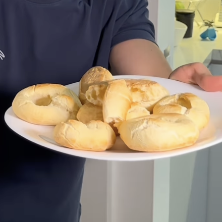

Pandebonos Protéicos
Ingredientes:
- 1 taza de harina
- 1 taza de queso costeño, mozzarella o parmesano
- 1 scoop de proteína de Dragon Pharma
- Un poquito de leche
- 1 cucharadita de polvo para hornear
- 1 huevo
Instrucciones:
- Precalienta el horno a 180°C.
- Mezcla la harina, el queso, la proteína en polvo y el polvo para hornear.
- Añade el huevo y un poco de leche, mezcla bien y amasa.
- Forma roscas con la masa.
- Hornea por 20 minutos a 180°C.